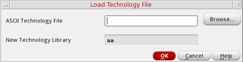

Compiling an ASCII Technology File
To compile a new technology file and attach it to your new library, follow these steps:
- From the Technology File for New Library form, select Compile an ASCII technology file.
-
Click OK.
The Load Technology File form appears.Your new library name appears in the New Technology Library field. -
In the ASCII Technology File field, type the path to a technology file.
You can use your own technology file or one of the following templates from the sample technology files shipped with all Virtuoso applications:
where install_dir is the directory in which you installed the Cadence software.install_dir/tools/dfII/samples/default.tfinstall_dir/tools/dfII/samples/mpu.tf
If you want to create a design library with a special technology file but do not know the path to the technology file, type the full hierarchical path to the default technology filedefault.tf. Later, you can use the Load command to modify the technology file information. Thedefault.tffile acts as a placeholder for your technology file. -
Click OK.
The new design library is created in the specified directory.
Related Topic
Return to top